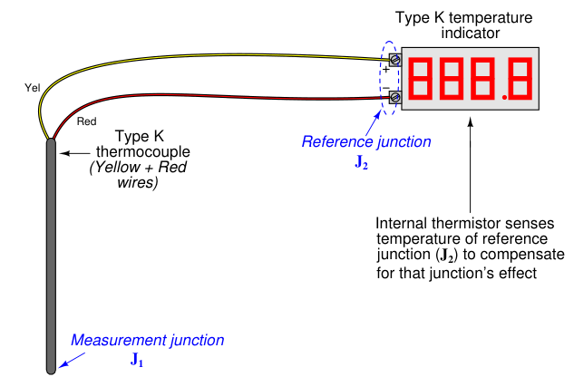
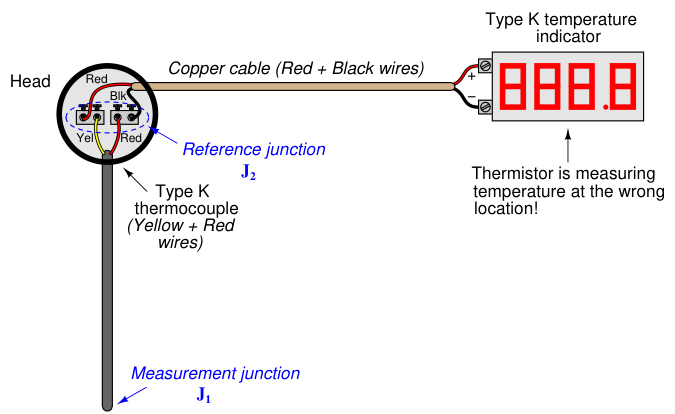
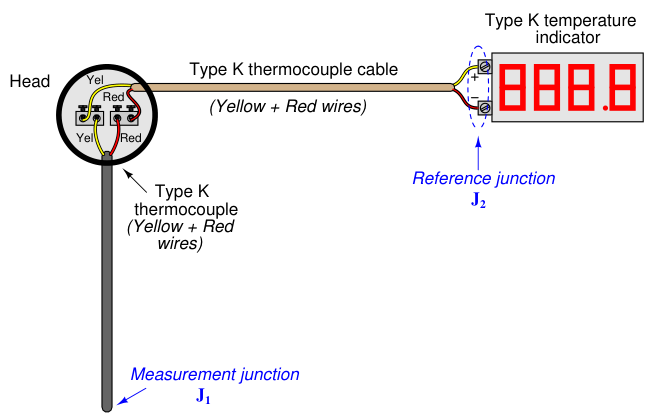
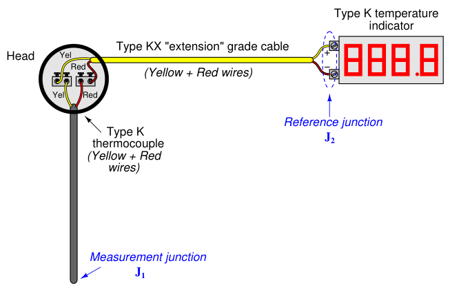

The original, as published: Tony R. Kuphaldt, Lessons In Industrial Instrumentation, Thermocouple extension wire. CC BY 4.0, https://creativecommons.org/licenses/by/4.0/. Imported as published, from https://www.ibiblio.org/kuphaldt/socratic/sinst/book/liii.pdf https://www.ibiblio.org/kuphaldt/socratic/sinst/book/liii.pdf
In every thermocouple circuit there must be both a measurement junction and a reference junction: this is an inevitable consequence of forming a complete circuit (loop) using dissimilar-metal wires. As we already know, the voltage received by the measuring instrument from a thermocouple will be the difference between the voltages produced by the measurement and reference junctions. Since the purpose of most temperature instruments is to accurately measure temperature at a specific location, the effects of the reference junction’s voltage must be “compensated” for by some means, either a special circuit designed to add an additional canceling voltage or by a software algorithm to digitally cancel the reference junction’s effect. In order for reference junction compensation to be effective, the compensation mechanism must “know” the temperature of the reference junction. This fact is so obvious, it hardly requires mentioning. However, what is not so obvious is how easily this compensation may be unintentionally defeated simply by installing a different type of wire in a thermocouple circuit.
To illustrate, let us examine a simple type K thermocouple installation, where the thermocouple connects directly to a panel-mounted temperature indicator by long wires:

Like all modern thermocouple instruments, the panel-mounted indicator contains its own internal reference junction compensation, so that it is able to compensate for the temperature of the reference junction formed at its connection terminals, where the internal (copper) wires of the indicator join to the chromel and alumel wires of the thermocouple. The indicator senses this junction temperature using a small thermistor thermally bonded to the connection terminals.
Now let us consider the same thermocouple installation with a length of copper cable (two wires) joining the field-mounted thermocouple to the panel-mounted indicator:

Even though nothing has changed in the thermocouple circuit except for the type of wires joining the thermocouple to the indicator, the reference junction has completely shifted position. What used to be a reference junction (at the indicator’s terminals) is no longer, because now we have copper wires joining to copper wires. Where there is no dissimilarity of metals, there can be no thermoelectric potential. At the thermocouple’s connection “head,” however we now have a joining of chromel and alumel wires to copper wires, thus forming a reference junction in a new location at the thermocouple head. What is worse, this new location is likely to be at a different temperature than the panel-mounted indicator, which means the indicator’s reference junction compensation will be compensating for the wrong temperature. The only practical way to avoid this problem is to keep the reference junction where it belongs: at the terminals of the panel-mounted instrument where the ambient temperature is measured and the reference junction’s effects accurately compensated. If we must install “extension” wire to join a thermocouple to a remotely-located instrument, that wire must be of a type that does not form another dissimilar-metal junction at the thermocouple head, but will form one at the receiving instrument.
An obvious approach is to simply use thermocouple wire of the same type as the installed thermocouple to join the thermocouple to the indicator. For our hypothetical type K thermocouple, this means a type K cable installed between the thermocouple head and the panel-mounted indicator:

With chromel joining to chromel and alumel joining to alumel at the head, no dissimilar-metal junctions are created at the thermocouple. However, with chromel and alumel joining to copper at the indicator (again), the reference junction has been re-located to its rightful place. This means the thermocouple head’s temperature will have no effect on the performance of this measurement system, and the indicator will be able to properly compensate for any ambient temperature changes at the panel as it was designed to do. The only problem with this approach is the potential expense of thermocouple-grade cable. This is especially true with some types of thermocouples, where the metals used are somewhat exotic (e.g. types R, S, and B). A more economical alternative, however, is to use something called extension-grade wire to make the connection between the thermocouple and the receiving instrument. “Extension-grade” thermocouple wire is made less expensive than full “thermocouple-grade” wire by choosing metal alloys similar in thermo-electrical characteristics to the real thermocouple wires within modest temperature ranges. So long as the temperatures at the thermocouple head and receiving instrument terminals don’t get too hot or too cold, the extension wire metals joining to the thermocouple wires and joining to the instrument’s copper wires need not be precisely identical to the true thermocouple wire alloys. This allows for a wider selection of metal types, some of which are substantially less expensive than the measurement-grade thermocouple alloys. Also, extension-grade wire may use insulation with a narrower temperature rating than thermocouple-grade wire, reducing cost even further. An interesting historical reference to the use of extension-grade wire appears in Charles Robert Darling’s 1911 text Pyrometry – A Practical Treatise on the Measurement of High Temperatures. On page 61, Darling describes “compensating leads” marketed under the brand-name of Peake designed to be used with platinum-alloy thermocouples. These “compensating” wires were made of two different copper-nickel alloys, each copper-nickel alloy matched with the respective thermocouple metal (in this case, pure platinum and a 90%-10% platinum-iridium alloy) to generate an equal and opposite millivoltage at any reasonable temperature found at the thermocouple head. Thus, the only reference junction in the thermocouple circuit is where these copper-nickel extension wires joined with the indicating instrument, rather than being located at the thermocouple head as it would be if simple copper extension wires were employed. With platinum being such an expensive metal (both then and now!), the cost savings realized by being able to use cheaper extension wire to connect the platinum thermocouple to a distant receiving instrument is significant. Extension-grade cable is denoted by a letter “X” following the thermocouple letter. For our hypothetical type K thermocouple system, this would mean type “KX” extension cable:

Thermocouple extension cable also differs from thermocouple-grade (measurement) cable in the coloring of its outer jacket. Whereas thermocouple-grade cable is typically16 brown in exterior color, extension-grade cable is usually colored17 to match the thermocouple plug (yellow for type K, black for type J, blue for type T, etc.).
16No coloring standard exists in the United States for platinum thermocouple-grade wire (e.g. types R, S, etc.). 17The colors I list here are for thermocouples in the United States.